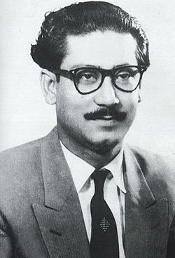

Sheikh Mujibur Rahman
The Father of Bengali Nation
Here's a time line of Sheikh Mujibur Rahman:
- Born - 17 March 1920 -
- Died - 15 August 1975 (aged 55) Dhaka, Bangladesh.
- Spouse(s) - Sheikh Fazilatunnesa Mujib
- Father - Sheikh Lutfur Rahman
- Mother - Sayera Khatun
"Sheikh Mujib became the Prime Minister of Bangladesh under a parliamentary system adopted by the new country. He charged the provisional parliament to write a new constitution proclaiming the four fundamental principles of "nationalism, secularism, democracy, and socialism," which reflect his political views collectively known as Mujibism. The Awami League won a huge mandate in the country's first general election in 1973. However, Mujib faced challenges of rampant unemployment, poverty and corruption, as well as the Bangladesh famine of 1974. The government was criticized for denying constitutional recognition to indigenous minorities and human rights violations by its security forces, notably the National Defence Force para militia. Amid rising political agitation, Mujib initiated one party socialist rule in January 1975. Six months later, he and most of his family were assassinated by renegade army officers during a coup. A martial law government was subsequently established."
-- First Prime Minister of Bangladesh